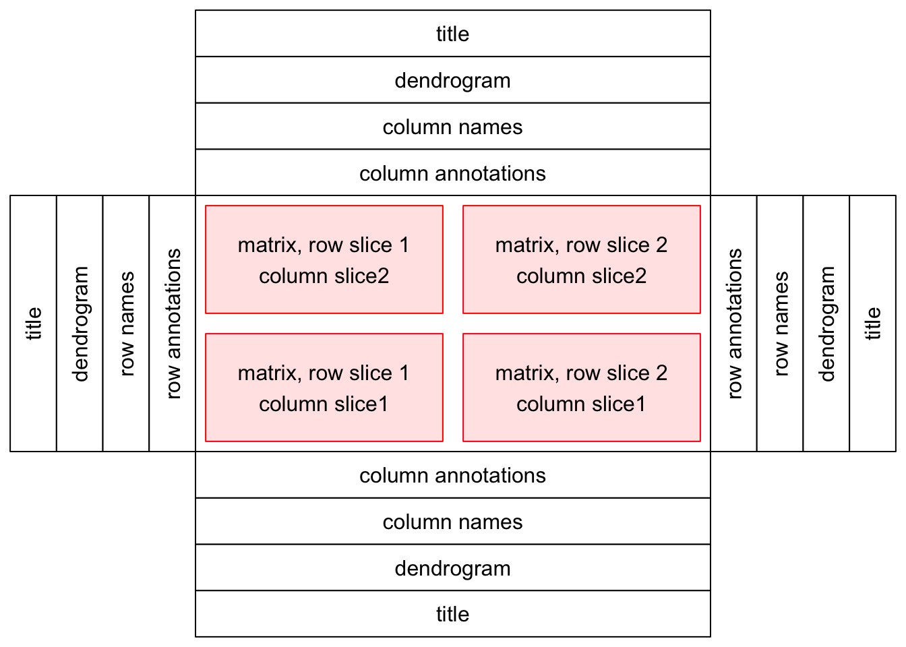
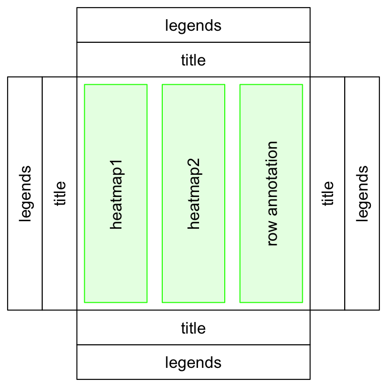
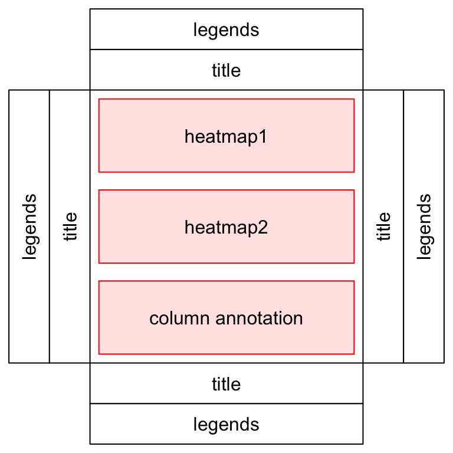

Chapter 1 Introduction
Complex heatmaps are efficient to visualize associations between different sources of data sets and reveal potential structures. Here the ComplexHeatmap package provides a highly flexible way to arrange multiple heatmaps and supports self-defined annotation graphics.
1.1 General design
A single heatmap is composed of the heatmap body and the heatmap components. The heatmap body can be split by rows and columns. The heatmap components are titles, dendrograms, matrix names and annotations, which are put on the four sides of the heamap body.

A heatmap list is concatenation of a list of heatmaps and heatmap annotations. Surrounding the heatmap list, there are global-level titles and legends.
One of the important things for the heatmap list is that rows for all heatmaps and annotations (it is row annotation if the heatmap list is horizontal.) are all adusted so that the same row in all heatmaps and annotations corresponds to a same feature.

The heatmaps and annotations can also be arranged vertically.

The ComplexHeatmap package is implemented in an object-oriented way. To describe a heatmap list, there are following classes:
Heatmapclass: a single heatmap containing heatmap body, row/column names, titles, dendrograms and column annotations.HeatmapListclass: a list of heatmaps and heatmap annotations.HeatmapAnnotationclass: defines a list of row annotations and column annotations. The heatmap annotations can be components of heatmap, also they can be independent as heatmaps.
There are also several internal classes:
SingleAnnotationclass: defines a single row annotation or column annotation.ColorMappingclass: mapping from values to colors.AnnotationFunctionclass: construct user-defined annotations.
ComplexHeatmap is implemented under grid system, so users need to know basic grid functionality to get full use of the package.
1.2 A brief description of following chapters
This chapter describes the configurations of a single heatmap.
This chapter describes the concept of the heatmap annotation and demonstrates how to make simple annotations as well as complex annotations. Also, the chapter explains the difference between column annotations and row annotations.
This chapter describes how to concatenate a list of heatmaps and annotations and how adjustment is applied to keep the correspondence of the heatmaps.
This chapter describes how to configurate the heatmap legends and annotation legends, also how to create self-defined legends.
This chapter describes methods to add more self-defined graphics to the heatmaps after the heatmaps are generated.
This chapter describes how to make oncoPrints and how to integrate other functionalities from ComplexHeatmap to oncoPrints.
This chapter describes functions implemented in ComplexHeatmap for specific use, e.g. visualizing distributions.
More simulated and real-world examples are shown in this chapter.